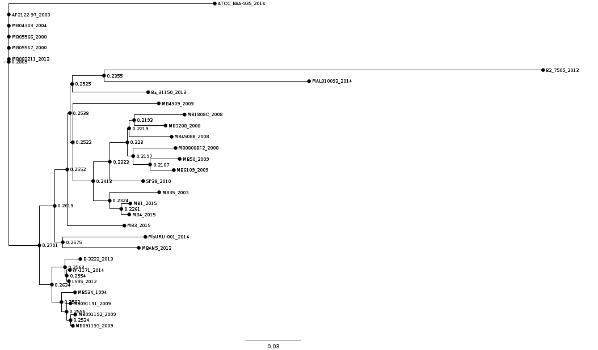
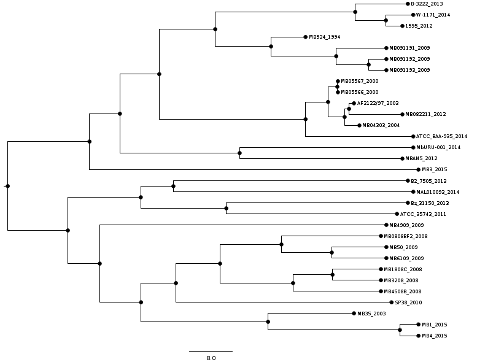
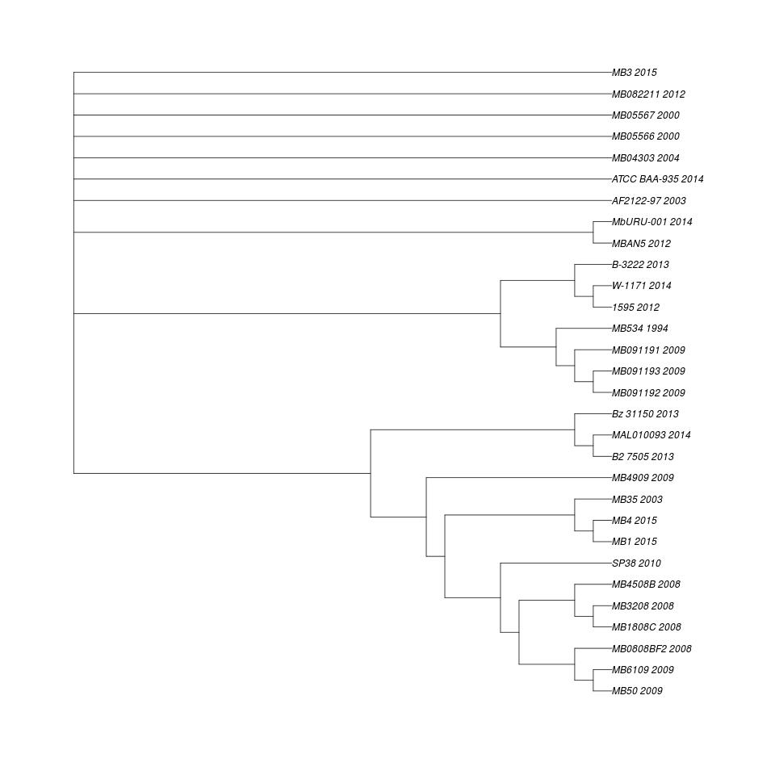
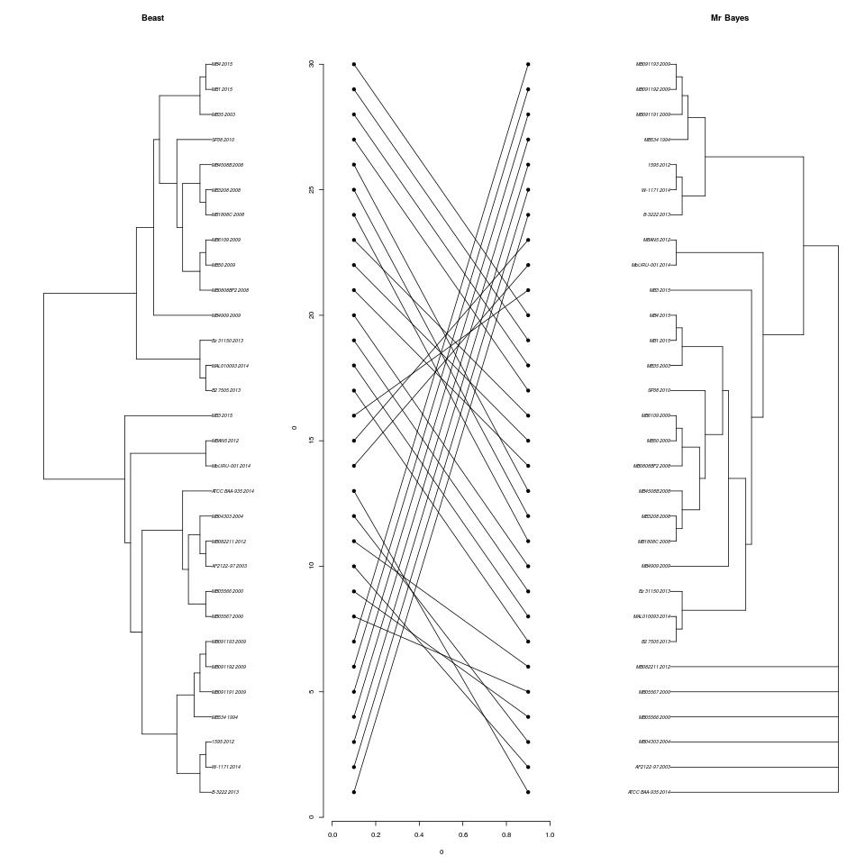

Árvore produzida pelo mr bayes. atcc_baa-935_2014 está como outgroup
Árvore produzida com beast.
Consenso entre as duas árvores
Outra comparação entre as duas árvores
Usar outgroup no beast?
How do I tell BEAST to use an outgroup? The simple answer is that you may not want to - BEAST will sample the root position along with the rest of the nodes in the tree. If you then calculate the proportion of trees that have a particular root, you obtain a posterior probability for this root position. However if you have a strong prior for an outgroup then you can constrain the ingroup to be monophyletic.
Artigo sobre origem de M. tuberculosis
Wirth et al 2008 - Origin, Spread and Demography of the Mycobacterium tuberculosis Complex. Plos Pathogens DOI:10.1371/journal.ppat.1000160